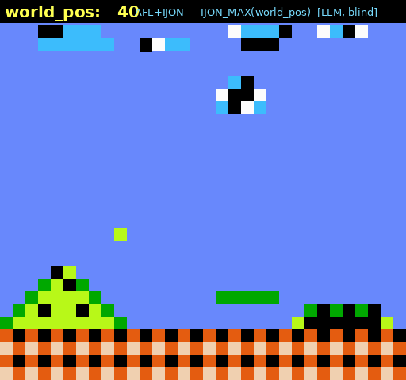

0×
libpng state-space
chunk-sequence diversity vs plain AFL
Teaching a language model to usher fuzzers through the maze.
Coverage-guided fuzzers go blind when interesting behaviour lives in data values, not in which edges run. IJON fixes that with a one-line human annotation that reshapes the feedback function. We replace that human with an autonomous LLM agent: it reads the fuzzer's telemetry, diagnoses why AFL is stuck, and writes the annotation — across mazes, Super Mario, libpng and a real vTPM.
A research log + reproducible evaluation. Built on IJON (Aschermann et al., S&P 2020) and AFL++.
AFL keeps an input when it lights up a new edge. But solve a maze, play a level, or match a checksum and the same edges run regardless of how close you are to the goal — moving the player, or getting the bytes "warmer", produces no new feedback. The fuzzer has no gradient to climb, and the campaign stalls forever.
IJON's insight: let an analyst expose the hidden state to the fuzzer with a tiny source annotation — IJON_SET(hash(x,y)) on the player's position, IJON_MAX(progress), IJON_CMP(a,b). With one line, AFL solves problems that defeat every automated tool.
The bottleneck is the human. Someone must read the code, read the fuzzer's progress, diagnose why it's stuck, pick the right primitive, and place it correctly. The IJON authors flag automating this as future work — and note they "typically had very limited understanding of the target." That's the gap we close.
A deterministic Python loop runs the campaign; the LLM (DeepSeek V4 Pro) is invoked at the two genuine judgment points only — classify why-stuck and synthesize the annotation. Everything mechanical — running AFL, detecting the plateau, patching source, rebuilding, measuring real coverage, keep/revert — is code. The agent is one reasoning call on pre-localized source; it never explores the codebase or generates inputs. Its only lever is the reward.
AFL_LLVM_IJON.Annotations accumulate; failed attempts are fed back so the model doesn't repeat them. Keep/revert is driven by source coverage, never raw edges_found — because IJON map entries inflate the edge count and would otherwise fake "progress".
IJON frames three failure classes. Given only the stripped source + plateau telemetry, the agent classifies the roadblock and emits the matching primitive — verified blind (it never sees the answer; see integrity).
✔ auto-solves. Maze → IJON_SET(hash(x,y)), solved in 8s. maxclimb → IJON_MAX(score), where plain AFL does 0 of 16.8M execs — solved in <1s.
✔ evidenced on real targets. Expose the sequence of events as state. libpng chunk sequences, a vTPM command machine — explored many× more thoroughly than plain AFL.
✔ auto-solves. Checksums & magic gates → IJON_CMP(a,b) turns a cliff into a gradient. Cracks 32-bit checks; breaks a real libpng frontier.
IJON's flagship: AFL "plays" Super Mario via ijon_max(pos_y/16, world_pos) on the screen position. We strip that annotation and hand the agent the bare game loop. It proposes IJON_MAX(world_pos) on its own — right primitive, right state. Here is a fuzzer-found playthrough driven by the agent's annotation (rendered ROM-free with a synthetic tile set; the live world_pos counter is the reward it maximizes):

Every result reproducible, and reported honestly — wins and negatives:
| Experiment | What the agent did | Result | Verdict |
|---|---|---|---|
| Human vs. LLM on IJON's own benchmarks | Strip the authors' annotation; agent re-derives it blind. | maze: exact match to the human's annotation. | match |
| libpng — convergence | chunk-sequence state log, measured over wall-clock. | 41× distinct chunk-sequences vs plain AFL (which saturates). | win |
| libpng — autonomy | loop with a state-diversity reward, no answer shown. | climbs to IJON_STATE(hash(mode,chunk_name)) itself — 30.9×. | closed |
| Super Mario | reproduce IJON_MAX(world_pos) blind; play the level. | annotation reproduced; A/B effectiveness tie (see honest §). | honest tie |
| libtpms (vTPM) 12h, real target | two autonomous annotations (sequence × command-type). | 11.5× command sequences; 7× command types; 0 bugs. | no bug · big Δ |
On libtpms the gap widened with time — plain AFL flat-lined at ~820 distinct command sequences (8h and 12h identical) while IJON climbed from 4,950 to 9,461. State-guided exploration compounds; it isn't a one-shot boost. No latent bug fell out — expected on a target OSS-Fuzz hammers continuously.
The Mario A/B tie isn't a failure — it's the clue that unifies everything. Mario's world_pos leaks into edge coverage (each new screen runs new code), so plain AFL already has the gradient and the annotation is redundant. Where the state is genuinely hidden from coverage — chunk sequences, a maximization score, command orderings — IJON wins, and the win compounds.
So the analyst's real skill isn't picking the primitive — it's choosing a state that edge coverage doesn't already capture. The autonomous loop, rewarded on state-diversity, learns to do exactly that.
Credibility is part of the result. We report what didn't work as plainly as what did, and we built guardrails so the agent can't cheat.
All arms tied (~world_pos 1,790) even at 1h. Position leaks into coverage; the strong modern AFL++ baseline already plays the level. The annotation was reproduced; it just wasn't needed here.
Recent libpng CVEs are format-gated (16-bit interlaced, palette+gamma), not CRC-gated. Coverage data refuted our CRC hypothesis. IJON-on-CRC was the wrong tool — honestly recorded.
No new bug on an OSS-Fuzz-hardened target — the expected long shot. The reliable win is the deployment + the 11.5× state expansion, not a CVE.
No 1-D synthetic target both defeats plain AFL and is IJON-climbable. The paper measures class-2 by sequence diversity, not crashes — which is what we demonstrate.
Each benchmark ships the ground-truth annotation behind #ifdef. Before the agent ever sees the source we strip the annotation, redact every line mentioning ijon (leaky comments, prototypes), and hard-assert no ijon token survives. The model knows the IJON API and taxonomy legitimately, from its own prompt — it is never handed the specific answer. (Our first checksum run "passed" only because a comment named the fix; we caught it and re-ran.)